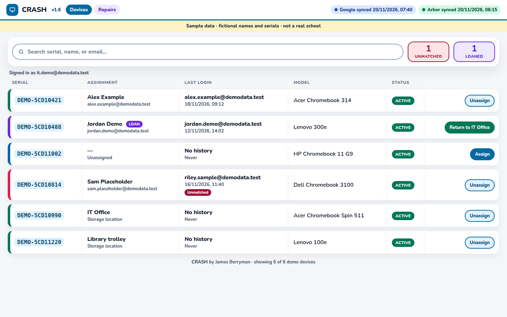
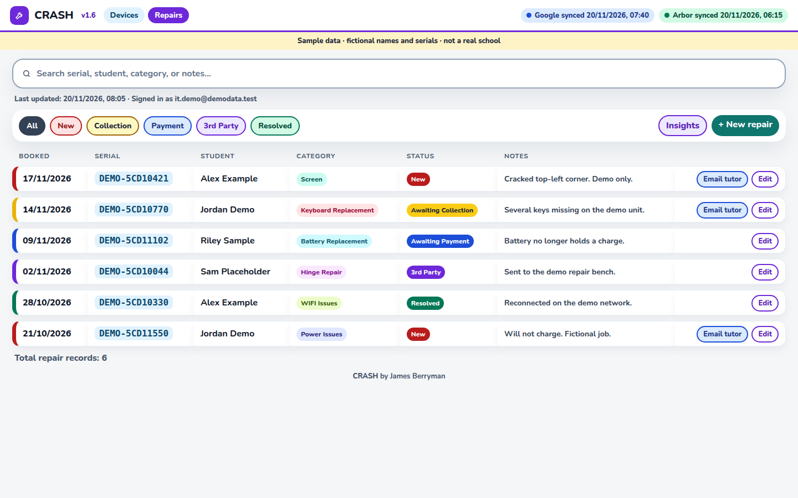

01
CRASH
Chromebook Repair, Asset and Storage Hub · Google Apps Script ·
CRASH is the Chromebook register for the IT team. It shows who a device is assigned to, whether it is out on loan, which trolley or office it lives in, and what is booked in for repair. Google Admin device sync keeps serials, models, status and the last sign-in up to date. MIS supplies the pupil roll used when a machine is assigned.
Devices and repairs are limited to IT staff. Teachers get a separate lookup: search a pupil or a serial and see the device, the last sign-in, and whether it is in repair.
Key features
- Search the register by serial, name or email.
- Assign a Chromebook to a pupil, a member of staff, or a storage place such as the IT office or a trolley.
- Mark a device as a loan, and return that loan to the IT office in one step.
- Flag a machine when the last Google sign-in does not match the person it is assigned to.
- Log repairs for screen, power, battery, hinge, keyboard, operating system, touchpad, Wi-Fi, water damage, and anything else.
- Move a repair through new, awaiting collection, awaiting payment, third party, and resolved, with booked, repaired and resolved dates.
- Open repair insights, and email a pupil’s tutor when a repair needs them.
- Note devices and pupils that keep coming back for repair.
- Show the last Google Admin and MIS sync on the page, and keep a nightly backup.
Screens


A demo is available on request. Contact.